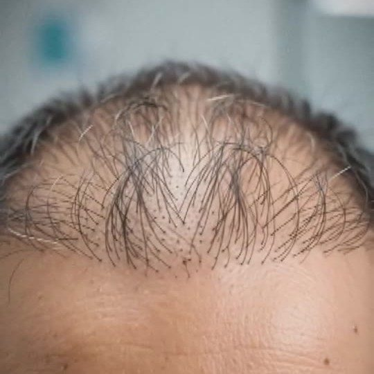
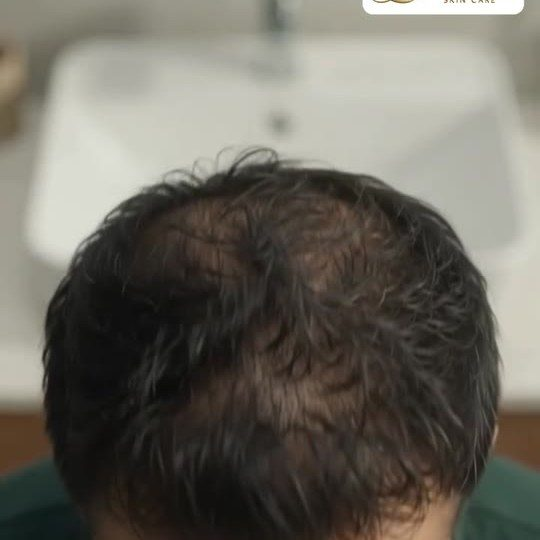

डॉक्टरांच्या देखरेखीखाली · अंधेरी वेस्ट & घाटकोपर ईस्ट, मुंबई
केस गळत आहेत? ट्रान्सप्लांट तुमच्यासाठी काय करू शकतो ते पाहा.
६० सेकंदांची केस तपासणी करा. डॉ. विनोद सोनावणे यांच्या टीमकडून तुमच्यासाठी वैयक्तिक योजना आणि ट्रान्सप्लांटचे प्रकार, पात्रता व खर्च याबद्दल मोफत गाईड मिळवा.
मोफत केस तपासणीपायरी 1 / ४
तुमची मुख्य समस्या कोणती?
PDF
मुंबई हेअर ट्रान्सप्लांट गाईड मिळवाFUE, DHI आणि FUT ची शेजारी शेजारी तुलना · तुम्ही पात्र आहात का? सोपी चेकलिस्ट
4.9 गुगल रेटिंग407 रिव्ह्यूज2 क्लिनिक्स
थोडी अधिक माहिती द्या
केस गळती किती काळापासून जाणवते?
तुमचे वय
सुरुवात कधी करायचा विचार आहे?
आधी हेअर ट्रान्सप्लांट केले आहे का?
तुमची योजना कुठे पाठवू?
क्लिनिकच्या वेळेत (सोम–शनि, सकाळी १० ते रात्री ८) आमची टीम तुम्हाला कॉल करेल.
✓
माझी माहिती व्हॉट्सॲपवर पाठवाएका टॅपमध्ये, म्हणजे आम्ही लवकर संपर्क करू शकूमोफत गाईड डाउनलोड करा (PDF)आत्ताच कॉल करा


4.9 GoogleDoctor-led